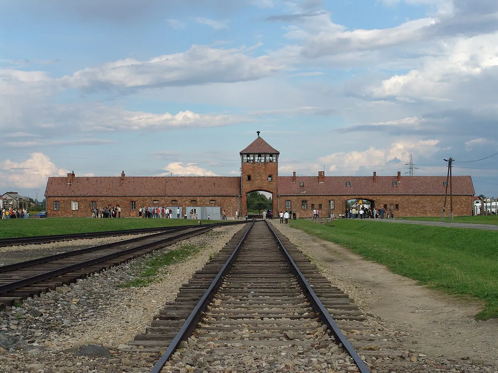
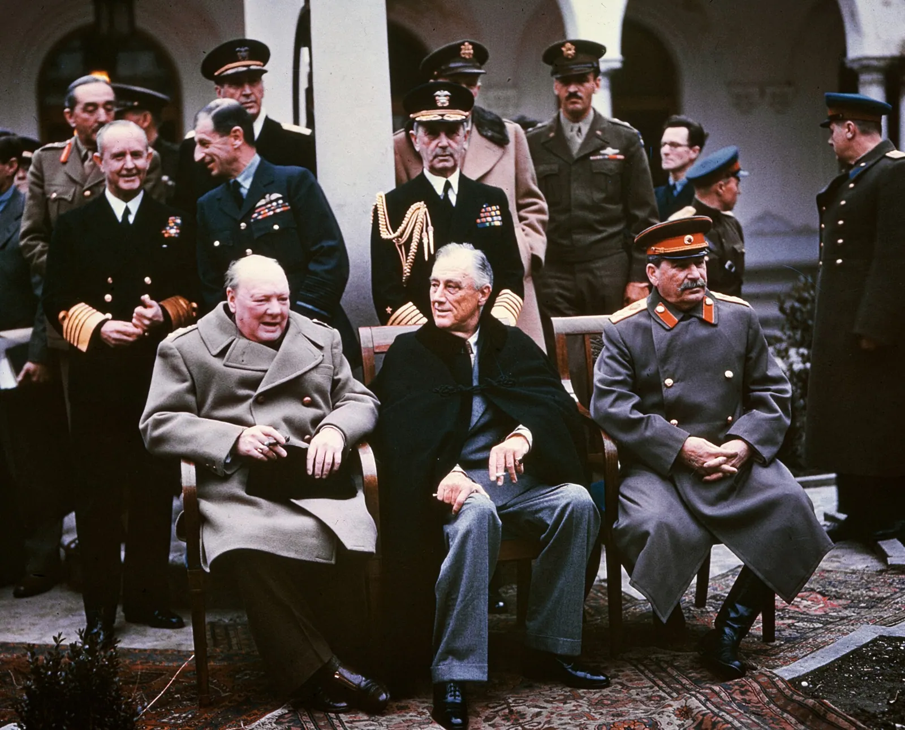
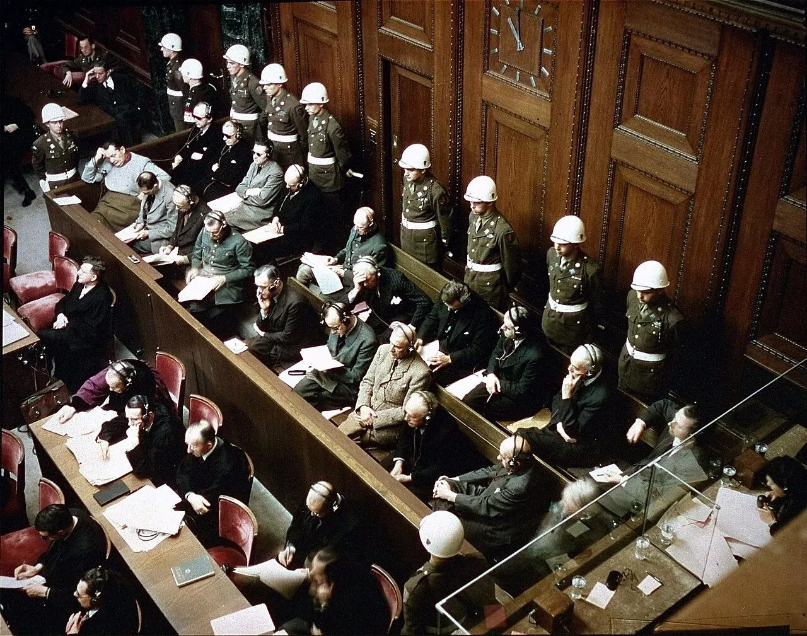
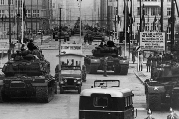

- La guerre a fait environ 60 millions de morts, aux deux tiers civils : génocide des Juifs et des Tsiganes, villes rasées, bombes atomiques. 1945 laisse un traumatisme humain, matériel et moral.
- L'Europe perd la centralité du monde au profit de deux vainqueurs extra-européens, les États-Unis et l'URSS, et ses empires coloniaux commencent à se fissurer.
- Les vainqueurs bâtissent un ordre nouveau (Nuremberg, ONU, Bretton Woods), mais leur rivalité le fige dès 1946 : c'est l'aube de la guerre froide.
Un monde traumatisé
I.1 Un désastre humain
La Seconde Guerre mondiale est le conflit le plus meurtrier de l'histoire. Contrairement aux guerres antérieures, elle ne frappe pas seulement les armées en campagne : elle s'abat sur les populations dans leur ensemble et abolit la distinction entre front et arrière.
Les civils représentent environ deux tiers des victimes, sur un total d'environ 60 millions de morts.
Ce bilan s'explique par la violence totale de la guerre. L'URSS perd environ 21 millions de personnes, en majorité civiles, victimes des combats, des sièges et de l'occupation. La Chine, en guerre contre le Japon depuis 1937, perd près de 20 millions de personnes (massacres, bombardements, famines). L'Allemagne compte environ 7 millions de morts, la Pologne près de 6 millions, dont 3 millions de Juifs.
La guerre marque ainsi une rupture historique : la population n'est plus seulement une victime collatérale, elle devient une cible directe de la violence.
Une guerre d'anéantissement
Les stratégies fondées sur la puissance de feu font des villes des cibles : le Blitz allemand tue plus de 43 000 civils britanniques en 1940-1941, dont près de la moitié à Londres ; les bombardements alliés rasent Hambourg (1943), Dresde, Tokyo (1945).
Le régime nazi mène surtout une politique d'extermination volontaire : le double génocide des Juifs et des Tsiganes. Les Juifs meurent de faim et de maladie dans les ghettos, fusillés à l'Est par les Einsatzgruppen dès l'été 1941, puis gazés dans les centres de mise à mort : l'extermination devient une opération industrielle, planifiée à l'échelle du continent. Au moins 200 000 Tsiganes sont victimes du même processus.
Mot forgé en 1944 par le juriste polonais Raphaël Lemkin : la destruction de tout ou partie d'un peuple de manière intentionnelle et planifiée. Il veut nommer et faire reconnaître juridiquement les massacres de masse commis par l'Allemagne nazie, mais aussi faire écho au massacre des Arméniens par l'Empire ottoman en 1915. La convention de l'ONU du 9 décembre 1948 en fait un crime de droit international.
Les armées régulières commettent aussi des crimes de guerre contre les civils : à Nankin, en décembre 1937, l'armée japonaise massacre des dizaines de milliers de civils et de prisonniers (plus de 200 000 selon le tribunal de Tokyo).
Chiffres à retenir

I.2 Un lourd bilan matériel
La guerre laisse des destructions matérielles considérables, dont le coût est estimé, selon les calculs, entre 1 000 et 2 000 milliards de dollars de l'époque. Des villes entières sont réduites en ruines.
À Dresde, les 13 et 14 février 1945, les bombardements britanniques et américains détruisent le centre historique et tuent jusqu'à 25 000 personnes (commission d'historiens de la ville, 2010).
Des infrastructures détruites
En Europe, près de 60 % des bâtiments industriels sont détruits ou gravement endommagés, ce qui paralyse la production. Les voies ferrées, ponts et ports sont eux aussi ravagés. Ces destructions plongent l'Europe dans une crise économique et sociale profonde. Toute l'économie est désorganisée : il faut reconstruire les usines, les chemins de fer, les villes et les logements. En Allemagne, les « femmes des ruines » déblaient les gravats à la main.
Un quotidien toujours bouleversé
Agriculture, transports et stocks détruits : les pénuries alimentaires durent plusieurs années. L'UNRRA, agence alliée créée en 1943, distribue vivres et médicaments aux pays libérés, mais l'Europe dépend encore largement des importations américaines.
Les États maintiennent les tickets de rationnement plusieurs années après la victoire.
- En Allemagne, l'hiver de la faim de 1946-1947 fait chuter les rations officielles sous 1 000 calories par jour dans certaines villes de la zone britannique, comme Hambourg.
Pour les civils, la guerre ne s'arrête donc pas en 1945 : elle se prolonge dans la misère et l'effort de reconstruction.
Ce qui est à reconstruire
La fin des tickets de rationnement
- Royaume-Uni
- Allemagne de l'Ouest
- France
I.3 Un bilan moral effroyable
Au-delà des destructions, la guerre laisse un traumatisme moral sans précédent. Deux révélations, en 1945, ébranlent les consciences : les camps d'extermination et l'arme atomique.
La découverte des camps
Les Soviétiques découvrent les premiers camps : Majdanek en juillet 1944, Auschwitz le 27 janvier 1945. Ces découvertes sont peu médiatisées. Ce sont les images de la libération des camps de l'Ouest par les Américains et les Britanniques (Buchenwald, Dachau, Bergen-Belsen, avril 1945) qui font le tour du monde.
Les bombardements atomiques
Pour l'état-major américain, la bombe est un triomphe scientifique qui abrège la guerre et évite un débarquement au Japon. Pour d'autres, c'est un abîme. Le 8 août 1945, dans Combat, Albert Camus écrit : « La civilisation mécanique vient de parvenir à son dernier degré de sauvagerie. » Il dénonce une civilisation qui se félicite d'une découverte capable de rayer une ville entière en un instant.
Le premier essai, Trinity, a eu lieu le 16 juillet 1945 au Nouveau-Mexique. Robert Oppenheimer, qui dirigeait le projet, dira avoir pensé à ce vers de la Bhagavad-Gita : « Maintenant je suis devenu la Mort, le destructeur des mondes. »
L'entrée dans l'ère atomique fait douter de l'idée même de progrès : l'humanité peut désormais s'autodétruire.
Avril 1945 : montrer pour que nul ne nie
Le général visite le camp et fait venir journalistes et parlementaires.
Les habitants de la ville voisine sont conduits dans le camp. Les images bouleversent l'opinion mondiale ; beaucoup de sociétés occidentales entrent dans un temps de culpabilité et d'interrogation morale.
« Le monde qui naît à la suite de la Seconde Guerre mondiale est profondément différent de celui d'avant-guerre. »
Maurice Vaïsse, historien
Un monde déstabilisé et marqué par une nouvelle hiérarchie des puissances
II.1 Naissance de la Grande Alliance
La guerre est aussi l'occasion d'une coopération inédite entre des puissances que tout oppose. États-Unis, Royaume-Uni et URSS se retrouvent en conférence pour coordonner l'effort militaire et préparer l'après-guerre : c'est le temps de la Grande Alliance.
Mais l'unité est fragile. À chaque rencontre, le rapport de force se déplace vers Staline, dont l'Armée rouge occupe peu à peu l'Europe de l'Est. À Potsdam, Roosevelt est mort et Churchill a perdu les élections : la confiance des débuts a disparu. La France, absente de Yalta, n'est pas davantage invitée à Potsdam. Les accords, souvent vagues, deviennent ensuite l'objet de lectures opposées à l'Est et à l'Ouest.

Les conférences de la Grande Alliance
- Potsdam
Staline, Harry Truman (successeur de Roosevelt) et Clement Attlee (qui remplace Churchill). Jugement des criminels de guerre ; Allemagne : les « 4 D » (dénazification, démilitarisation, démocratisation, décartellisation). Truman évoque une arme nouvelle ; la méfiance s'installe.
- Yalta
Staline en position de force. L'Allemagne en quatre zones, la France obtient la sienne. Déclaration sur l'Europe libérée : des élections libres promises, jamais tenues à l'Est.
- Téhéran
Première rencontre des Trois Grands. Débarquement en France (Overlord) combiné à l'opération Bagration à l'Est. La Pologne glissera vers l'ouest.
- Le Caire
Roosevelt, Churchill, Tchang Kaï-chek, sans Staline, qui ne veut pas s'engager en Asie. Le Japon devra rendre les territoires conquis depuis 1914.
II.2 Un monde dominé par deux superpuissances
En 1945, le monde n'est plus multipolaire : deux puissances dominent toutes les autres, sur les plans militaire, économique et idéologique. Cette bipolarisation rompt avec l'ordre européen d'avant-guerre.
La puissance américaine
Les États-Unis s'imposent dans le Pacifique. Face à la résistance japonaise (à Okinawa, d'avril à juin 1945, environ 12 000 Américains et plus de 110 000 Japonais sont tués), Truman fait le choix de la bombe atomique.
Les raisons officielles : finir vite la guerre, épargner des vies américaines, punir les crimes du Japon. Les raisons stratégiques : prendre de vitesse l'URSS et faire une démonstration de puissance.
Les États-Unis occupent ensuite le Japon jusqu'en 1952 et le sud de la Corée. Leur puissance économique leur permet d'imposer l'architecture de Bretton Woods, et l'ONU, d'abord réunie à Londres, s'installe à New York dès 1946, dans un siège définitif achevé en 1952.
La puissance soviétique
La Grande Guerre patriotique (1941-1945) fait de l'URSS une puissance mondiale. Malgré un coût humain immense, elle gagne un prestige considérable et l'Armée rouge devient la première armée du monde.
Les deux bombes
Environ 140 000 morts à la fin de 1945.
L'Armée rouge envahit la Mandchourie le lendemain.
Environ 74 000 morts. Hirohito annonce la capitulation le 15 août ; elle est signée le 2 septembre.
Les États-Unis en 1945
Triomphe militaire
L'Armée rouge prend Berlin (16 avril - 2 mai 1945) ; Hitler se suicide le 30 avril. L'URSS repousse sa frontière jusqu'à la ligne Curzon, garde l'est de la Pologne d'avant-guerre (Biélorussie et Ukraine occidentales) et annexe de nouveau les pays baltes.
Triomphe idéologique
Le communisme sort grandi de la Résistance. En France, le PCF devient le premier parti aux élections d'octobre 1945 (26 %). À l'Est, Staline installe des régimes à sa main, les futures démocraties populaires.
II.3 L'Europe au sortir de la guerre
Face aux deux géants, l'Europe sort meurtrie et redécoupée. Yalta et Potsdam redessinent la carte et amorcent une division durable.
Une Europe redécoupée
La Pologne glisse vers l'ouest. À l'est, sa frontière suit la ligne Curzon : l'URSS garde les territoires annexés en 1939. En compensation, elle reçoit des terres allemandes jusqu'à la ligne Oder-Neisse. L'Allemagne perd environ un quart de son territoire de 1937 ; la Prusse orientale est partagée entre la Pologne et l'URSS (Königsberg devient Kaliningrad).
C'est l'un des plus grands transferts de populations du siècle : 12 à 14 millions d'Allemands fuient ou sont expulsés, tandis que des Polonais quittent les régions annexées par l'URSS. Potsdam les voulait « ordonnés et humains » ; ils se font souvent dans la violence et le dénuement.
Une Europe déclassée
La déseuropéanisation du monde devient une évidence : les puissances qui dominaient la planète depuis cinq siècles passent au second plan.
- Le Royaume-Uni, vainqueur, sort ruiné et endetté envers les États-Unis : il n'a plus les moyens de rivaliser avec les deux superpuissances.
- La France, soutenue par Churchill, obtient une zone d'occupation et un siège permanent au Conseil de sécurité.
- Les empires coloniaux sont ébranlés : la décolonisation s'annonce.
Le glissement de la Pologne
Le prix du redécoupage
Les quatre zones d'occupation
Berlin, en zone soviétique, est elle aussi divisée en quatre secteurs.
À l'Ouest
Des démocraties libérales, soutenues par les États-Unis. Le Sud reste autoritaire : Portugal de Salazar, Espagne de Franco, Grèce plongée dans la guerre civile (1946-1949).
À l'Est
L'URSS installe des démocraties populaires à parti unique. En Hongrie, Mátyás Rákosi élimine l'opposition par la « tactique du salami », tranche après tranche. Bien que minoritaires, les communistes s'imposent ainsi ; ces pays forment un glacis qui protège l'URSS de toute influence occidentale.
« De Stettin dans la Baltique à Trieste dans l'Adriatique, un rideau de fer s'est abattu à travers le continent. »
Winston Churchill, discours de Fulton, 5 mars 1946
II.4 Les mondes extra-occidentaux contestent l'ancien monde
Le déclin européen se lit aussi dans les colonies. Les colonisés, qui ont combattu au nom de la liberté, réclament pour eux-mêmes les valeurs qu'ils ont défendues. La Charte de l'Atlantique (1941) avait promis le droit des peuples à choisir leur gouvernement : l'idée d'autodétermination se retourne contre les empires : les nationalistes s'appuient sur le vocabulaire même des puissances coloniales pour légitimer leurs revendications. En Indonésie, Sukarno proclame l'indépendance dès le 17 août 1945.
La fin de la domination au Proche et au Moyen-Orient
Le 22 mars 1945, la Ligue arabe est fondée au Caire : elle porte les revendications des États arabes face aux puissances coloniales.
Les indépendances s'enchaînent : Irak (1932), Liban (1943), Syrie et Transjordanie (1946). En Palestine mandataire, la Shoah renforce la légitimité du sionisme et l'immigration juive s'intensifie. Pris entre ses promesses contradictoires, le Royaume-Uni remet la question à l'ONU, qui vote un plan de partage le 29 novembre 1947, et se retire le 14 mai 1948, jour de la proclamation de l'État d'Israël.
Les premières fissures
Émeutes à Sétif, Guelma et Kherrata. La répression fait des milliers de morts (1 500 selon Paris, 45 000 selon l'Algérie).
Le Viêt-Minh d'Hô Chi Minh proclame l'indépendance de la République du Viêt Nam. La France renvoie des troupes : la guerre d'Indochine commence fin 1946.
Insurrection réprimée : 10 000 à 40 000 morts selon les historiens (89 000 selon l'armée en 1949).
Après la lutte menée par Gandhi et Nehru, indépendance et partition sanglante avec le Pakistan.
Un monde post-westphalien en émergence mais figé
III.1 L'émergence d'une justice internationale
Les Alliés veulent juger les responsables. C'est une révolution juridique : pour la première fois, les dirigeants d'un État vaincu répondent de leurs actes devant une juridiction internationale. Le principe est celui de la responsabilité pénale individuelle : on ne juge plus seulement des États, mais des hommes. C'est en ce sens un ordre post-westphalien : la souveraineté ne protège plus les criminels.
Le tribunal de Nuremberg
Le tribunal siège à Nuremberg, ville des grands rassemblements nazis. Il juge quatre chefs d'accusation, dont trois catégories de crimes :
- Crimes contre la paix : préparer et mener une guerre d'agression.
- Crimes de guerre : massacres, déportations, exécutions d'otages et de prisonniers.
- Crimes contre l'humanité : notion nouvelle, qui vise les persécutions et exterminations de civils, dont le génocide des Juifs et des Tsiganes.
Les accusés, dont Hermann Göring, ont des avocats et suivent les débats grâce à la traduction simultanée, une innovation. Le 29 novembre 1945, le film des camps tourné par les Alliés est projeté à l'audience devant les accusés. Au verdict du 1er octobre 1946 : douze condamnations à mort, sept peines de prison, trois acquittements.
Le procès de Tokyo
De 1946 à 1948, le tribunal de Tokyo juge les dirigeants japonais. Sur 28 accusés, 25 vont jusqu'au verdict : tous sont reconnus coupables, sept sont pendus, dont le général Tojo.
De nombreux chefs militaires échappent aux poursuites et l'empereur Hirohito n'est pas jugé. La rivalité naissante pousse les États-Unis à ménager les élites japonaises pour en faire des alliés contre l'URSS.
Vers Nuremberg
- Verdict
12 condamnations à mort.
- Ouverture du procès
22 accusés présents ou jugés par défaut.
- Accord de Londres
Les quatre vainqueurs créent le tribunal.
- Déclaration de Saint-James
Neuf gouvernements en exil à Londres exigent le châtiment des criminels.
Le verdict de Nuremberg

Une justice exemplaire
Droits de la défense, preuves écrites, débats publics, dans la tradition de l'habeas corpus : le procès se veut universel et veut montrer que le droit peut triompher de la barbarie, à l'opposé des méthodes nazies. Il fonde la justice pénale internationale.
Une justice des vainqueurs
Les juges viennent des quatre puissances alliées. Les bombardements de Dresde ou d'Hiroshima ne sont pas évoqués, ni l'invasion soviétique de la Pologne et de la Finlande.
III.2 Une nouvelle architecture politique mondiale : l'ONU
L'échec de la Société des Nations, impuissante face aux agressions des années 1930, pousse les Alliés à bâtir une organisation plus forte, dotée de vrais moyens d'action.
La Charte superpose deux logiques. La démocratie internationale : chaque État a une voix égale à l'Assemblée générale. Le concert des grandes puissances : les cinq membres permanents du Conseil de sécurité (États-Unis, URSS, Royaume-Uni, France, Chine) ont un droit de veto, qui garantit que l'ONU n'agira jamais contre l'un d'eux.
- La Charte affirme la souveraineté des États et la non-ingérence dans leurs affaires intérieures.
- L'armée de l'ONU prévue par la Charte ne voit jamais le jour : les Casques bleus n'apparaissent qu'avec les observateurs de 1948, puis la force de Suez en 1956.
- Autour d'elle naissent des agences spécialisées : FAO (alimentation et agriculture, 1945), UNESCO (éducation, science et culture, 1945), OMS (santé mondiale, 1948).
Naissance de l'ONU
- Entrée en vigueur
Devenue la Journée des Nations unies.
- San Francisco
50 États signent la Charte.
- Yalta
Accord sur le vote au Conseil de sécurité.
- Dumbarton Oaks
Premier projet de l'organisation.
- Charte de l'Atlantique
Roosevelt et Churchill : liberté, sécurité collective, autodétermination.
L'architecture de l'ONU en 1945
Deux logiques dans un même texte : l'égalité des États à l'Assemblée, le privilège des cinq vainqueurs au Conseil.
III.3 Une nouvelle architecture économique : Bretton Woods
Pour Washington, la crise de 1929 et le protectionnisme ont nourri les totalitarismes et mené à la guerre. Le secrétaire d'État Cordell Hull le résume : « le commerce sans entraves va de pair avec la paix ». Il faut donc rendre la coopération entre États à la fois nécessaire et inévitable.
Du 1er au 22 juillet 1944, 44 pays se réunissent à Bretton Woods, dans le New Hampshire, pour fonder un nouvel ordre économique.
Le triomphe du dollar
Deux plans s'affrontent : celui de l'Américain Harry Dexter White, centré sur le dollar, et celui du Britannique John Maynard Keynes, qui propose une monnaie internationale, le bancor. Le plan américain l'emporte : seul le dollar est convertible en or, à 35 dollars l'once, et les autres monnaies lui sont rattachées par des parités fixes. Ce système d'étalon de change-or dure jusqu'à la fin de la convertibilité, décidée par Nixon le 15 août 1971.
Un leadership sous couverture coopérative
Les États-Unis donnent à leur domination l'apparence de la coopération : le FMI est dirigé par un Européen, la Banque mondiale par un Américain. En 1947, le plan Marshall aide l'Europe à se reconstruire, diffuse le modèle américain et sert de rempart contre le communisme. Annoncé le 5 juin 1947 à Harvard, il apporte environ 13 milliards de dollars à seize pays d'Europe de l'Ouest entre 1948 et 1952 ; l'URSS le refuse et l'interdit aux pays de sa zone.
L'étalon de change-or
Du GATT à l'OMC
- L'OMC, après les accords de Marrakech (1994)
- Le GATT, à la place de l'OIC rejetée par le Sénat américain
Deux institutions jumelles, à Washington
Prêts pour la reconstruction de l'Europe et du Japon, puis pour le développement.
Surveille les parités et prête aux pays en déficit.
« Aucun pays à l'époque moderne n'est jamais sorti d'une guerre dans d'aussi heureuses conditions économiques. »
John Kenneth Galbraith, économiste
III.4 La reconstruction d'États viables et stables
La reconstruction ne se limite pas à la relance économique : pour les Alliés, une paix durable passe par la justice sociale. La misère des années 1930 a nourri les totalitarismes ; l'État doit désormais protéger contre les grands risques de la vie.
En fondant la stabilité politique sur la protection sociale, ces politiques construisent des États solides, démocratiques et viables, et donnent aux démocraties un argument face au modèle soviétique. En France, les nationalisations de 1945-1946 (Renault, houillères, électricité, grandes banques) complètent ce dispositif. Elles s'appuient sur l'idée keynésienne que l'État doit soutenir la demande et protéger l'emploi.
Les cinq géants de Beveridge (1942)
- Le besoinla pauvreté
- La maladiel'absence de soins
- L'ignorancele manque d'instruction
- L'insalubritéle mal-logement
- L'oisivetéle chômage
États-Unis
Le Social Security Act de 1935 crée retraites et assurance chômage. Il est complété en 1965 par Medicare (personnes âgées) et Medicaid (familles modestes).
Royaume-Uni
Le rapport Beveridge (1942) inspire le Welfare State du gouvernement Attlee et le NHS, service national de santé gratuit, en 1948.
France
Les ordonnances d'octobre 1945 créent la Sécurité sociale (Pierre Laroque, Ambroise Croizat). Le préambule de la Constitution de 1946 inscrit le droit à la protection sociale.
III.5 Un nouvel ordre mondial rapidement contesté
À peine construit, l'ordre de 1945 se fissure. La coopération avait tenu face à l'ennemi commun ; la paix revenue, les modèles capitaliste et communiste s'opposent.
L'aube de la guerre froide
La multipolarité européenne de 1939 cède la place à une bipolarisation mondiale. Dès 1945, les deux vainqueurs raisonnent à l'échelle de la planète : l'URSS pousse vers l'Iran, les Détroits turcs et l'Asie ; les États-Unis reconstruisent le Japon et s'installent en Méditerranée et dans le Pacifique. En mars 1947, les pressions soviétiques sur la Grèce et la Turquie conduisent Truman à annoncer sa doctrine d'endiguement.
Les lignes de partage se dessinent déjà : la Corée est coupée au 38e parallèle entre occupation soviétique et américaine.
Trois points de crispation
Les quatre occupants s'entendent sur Nuremberg, mais pas sur l'économie ni sur le régime politique. Aucun traité de paix n'est signé. Américains et Britanniques fusionnent leurs zones en bizone le 1er janvier 1947.
Présente en 1944, elle refuse de ratifier les accords en décembre 1945 : les institutions ne seront pas universelles.
Occupé depuis 1941, l'Iran devient le symbole de l'échec du nouvel ordre : l'Armée rouge reste dans le nord du pays après la date prévue (2 mars 1946). Sous la pression américaine et devant le Conseil de sécurité, elle se retire en mai 1946.
George F. Kennan · le Long Télégramme, 22 février 1946
Depuis Moscou, le diplomate américain explique que le régime soviétique voit le monde comme une lutte entre capitalisme et socialisme : aucune coopération sincère n'est possible, l'Occident est un ennemi idéologique à affaiblir.
Le Parti détient seul la vérité ; la propagande présente sans relâche le modèle soviétique comme supérieur.
Face à une expansion par des moyens indirects, Kennan prône la fermeté sur le long terme. La politique du containment sera formalisée dans son article signé « X » en 1947.
1945 marque à la fois la naissance d'une nouvelle hiérarchie des puissances et le début de la guerre froide. L'Europe, ruinée et divisée, perd son rôle central au profit des géants américain et soviétique.
Accroche
Le 26 juin 1945, à San Francisco, cinquante États signent la Charte des Nations unies. Huit mois plus tard, à Fulton, Churchill décrit un « rideau de fer » tombé sur l'Europe. Comment l'ordre de 1945 a-t-il pu naître et se figer presque dans le même mouvement ?
Idée-force
1945 n'est pas une année zéro mais une charnière : l'Europe perd la centralité du monde au profit de deux vainqueurs extra-européens, et les institutions pensées pour la coopération deviennent vite le cadre de leur rivalité. L'année sert ainsi de point de départ pour penser la bipolarité, la décolonisation et la gouvernance mondiale.
Sujets où le placer
- 1945, année zéro des relations internationales ? HGG
- L'ONU, instrument de la paix ou reflet des rapports de force ? HGG
- Juger les crimes de masse : justice ou vengeance des vainqueurs ? philo
- Bretton Woods, un ordre économique au service des États-Unis ? ESH
Pièges à éviter
Dresde n'a pas fait 300 000 morts mais jusqu'à 25 000. Yalta n'a pas « partagé le monde » : la division de l'Europe vient de l'occupation par l'Armée rouge et de la rupture de 1946-1947. Les Casques bleus n'existent pas en 1945.

HGG · Chapitre 5Géopolitique de la guerre froide HGG · Chapitre 6Décolonisations et tiers-monde Dossier n° 018Bretton Woods Dossier n° 028Hannah Arendt et la banalité du mal Dossier n° 030Le FMI, gardien contesté de la stabilité financièreSources
- Maurice Vaïsse, Les Relations internationales depuis 1945, Armand Colin.
- Annette Wieviorka, Le Procès de Nuremberg, Éditions Ouest-France, 1995 ; rééd. Liana Levi, 2006.
- Ville de Dresde, rapport final de la commission d'historiens sur les bombardements de février 1945, 17 mars 2010.
- Peter Sloterdijk, Écumes. Sphères III, Maren Sell, 2005 (Luftbeben, Suhrkamp, 2002).
- Henry Laurens, La Question de Palestine, t. II et III, Fayard.
- Albert Camus, éditorial de Combat, 8 août 1945.